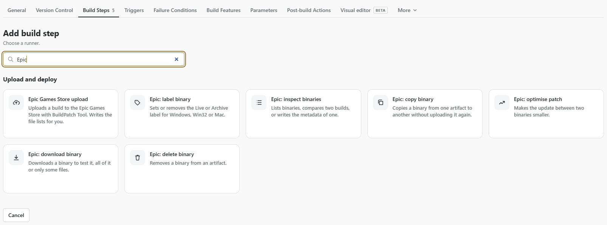

Epic Games Store
Upload your game to Epic, label it live and manage its binaries from a build, with the Epic BuildPatch Tool.
What it is
Epic publishes games through artifacts and binaries. An artifact is one product you ship, for example your game on Windows. A binary is one uploaded version of it. Epic's command line program, the BuildPatch Tool, uploads and manages binaries. Buildspawn runs it for you in build steps, so a successful build can publish itself.
Buildspawn keeps the secret keys in a credential. They never appear in a step, a file or the log.
When to use it
Use these steps when your studio ships on the Epic Games Store and you want the build machine, not a person, to upload and label builds.
The steps
| Step | What it does |
|---|---|
| Install BuildPatch Tool | Puts the tool on an agent that does not have it. |
| Epic Games Store upload | Uploads a packaged game as a new binary. |
| Epic: label binary | Puts a binary live for a platform, or takes the label away. |
| Epic: optimise patch | Makes the update between two binaries smaller for players. |
| Epic: inspect binaries | Lists binaries, compares two builds, or reads the metadata of a build. |
| Epic: download binary | Downloads a binary to test it before release. |
| Epic: copy binary | Copies a binary to another artifact without uploading it again. |
| Epic: delete binary | Removes a binary at once. |
How the steps fit together
- An administrator adds an Epic Games Store credential once.
- An administrator uploads the BuildPatch Tool ZIP once, under Manage › Tools › BuildPatch Tool.
- Your build makes the package, for example with an Unreal Engine or Unity step.
- Epic Games Store upload sends it. It hands the new version on to later steps as
${EPIC_BUILD_VERSION}. - Epic: optimise patch and Epic: label binary use that version by default.
Each step hands values on to the steps after it. The log shows them as Epic: Step output NAME = value. Later steps can use them as ${NAME} or %NAME%.

Where things are set
| What | Where |
|---|---|
| Keys, product, default artifact | A credential of the kind Epic Games Store. See Epic Games Store credential. |
| The BuildPatch Tool ZIP, and which agent has it | Manage › Tools › BuildPatch Tool. See The BuildPatch Tool page. |
| Where an agent keeps the tool | The BuildPatch Tool folder setting of the agent. See BuildPatch Tool folder. |
| Who may set a binary live or delete one | The permissions Epic Games Store / Set Live and Epic Games Store / Delete binary. |
Rules that apply to every step
- The Build version must be new for the artifact, for every platform. Put the platform in it, for example
1.4.${BUILD_NUMBER}-Windows. - Epic deletes a binary with no label after about a week. Label what you want to keep.
- When a step fails, the log says why in plain words and names the credential or artifact. The tool's own logs are kept in
epic-logswhen you ask for them. - The tool runs with the secret in the environment of that one process. Use a build user of its own on the agent, because a process of the same user can read the environment of another one.